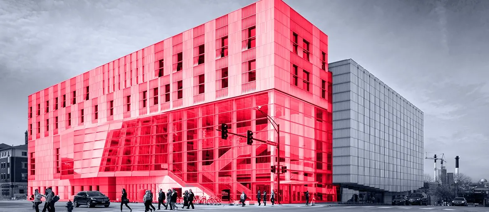

Upkept Assets release notes keep returning to offline reliability, dispatch, work-order cards, crash recovery, and association picker issues. These field paths must stay trusted.
Prepared for Odevo
Scaling AI across Odevo without slowing core property workflows
Odevo is growing AI inside real property work: cases, documents, invoices, internal tools, and field maintenance across local companies, boards, associations, and residents in many markets.
Saw the Developer - AI Team role and the AI architecture role. Both point to one moment: useful AI now needs release discipline across many companies and markets.
Our read
The signal says Odevo is moving AI from lab work into daily property work. The AI role names case triage, document pipelines, invoice checks, and OdevoGPT across multiple companies and markets. That means the hard part is not one model. It is repeatable delivery across many brands, data shapes, and local workflows. Upkept Assets shows the same field need: work orders, inspections, offline use, dispatch, and association lists must stay steady. If AI moves faster than DevSecOps guardrails, teams get pilots, not trusted tools.
Where we'd start
Create one regression pack for no-network use, slow sync, large association lists, photo upload, and work-order handoff before AI touches dispatch.
What we'd do
Six-week dedicated squad
A dedicated Elinext squad works under Odevo product and tech leads, with weekly demos and clear handover.
Team shape: 1 AI tech lead, 2 Python engineers, 1 React engineer, 1 DevSecOps engineer, and 1 QA automation engineer.
Flow map
Map case triage, document, invoice, and Upkept work-order flows into one risk-ranked delivery backlog for review.
AI guardrails
Build a reusable RAG and evaluation harness for PDFs, emails, invoices, and support cases before rollout.
Release checks
Add CI checks for prompts, tests, secrets, Terraform, Docker images, and Kubernetes deploy paths before each release.
Handover
Run weekly demos with AI and product teams, then hand over code, tests, and playbooks.
Who is Elinext
Elinext is a full-cycle software development company, active since 1997, with about 700 in-house specialists and no freelancers. For Odevo, the fit is AI, DevOps, QA, and product delivery under your own product lead. We bring ISO 27001 and ISO 9001 practices to security, quality, and delivery control. Our named customers include Siemens, Broadcom, Volkswagen, TRUMPF, and TUI. That matters here because the work is not a demo. It is a production path for AI across real property workflows.
SiemensBroadcomVolkswagenTRUMPFTUI
Proof

AI-driven mobile app for real estate
Elinext delivered a production-ready real estate mobile app using AI-assisted workflows, with offline support for field tasks.
Read the case study
Building tour application
Elinext built mobile tools for real estate teams, including iPad presentation of 360-degree views and floor plans.
Read the case study